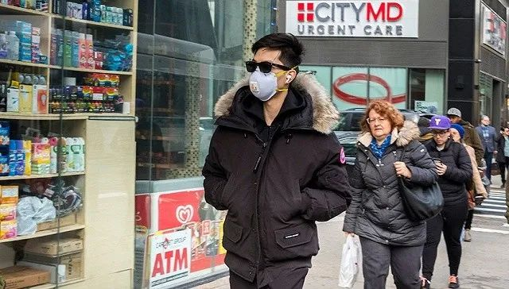

确诊近5千！韩国对疫情“宣战”！政府24小时全面戒备状…多国确诊人数大幅攀升，中国以外已有64国出现疫情
原文链接 备份链接 目前，新冠肺炎疫情在多国持续蔓延，韩国、意大利、伊朗等国感染人数持续增加，比利时、约旦、沙特、塞内加尔、突尼斯、拉脱维亚等国2日宣布出现首例新冠肺炎确诊病例。 据世卫组织最新报告，截至欧洲中部时间3月2日上午10时（ …
图片来源：联合国新闻
记者：肖恩
“
世卫组织称，世界正处于一个未知领域，但新冠肺炎在传播上不像流感，只要方法得当，完全有可能被遏制。
”
新冠肺炎的蔓延开始呈现“全球化”趋势，覆盖六大洲超70国，中国以外累计确诊病例已过万人。从疫情扩散路径上看，全球范围内都呈现出“从点到面”的特点，即从一个中心点出发向外辐射，由此再出现第二，甚至第三代人传人病例。与此同时，疫情“倒灌”的现象也开始出现。
世界卫生组织（WHO）称，截至北京时间3月2日17点，24小时内中国境外新增病例数几乎是中国境内的9倍，已经蔓延至除南极洲外所有大洲。意大利和伊朗已成为境外两个疫情辐射中心，多国疫情都源于意大利和伊朗的输出病例，因而也是现阶段国际疫情防控的重点之一。
据中新社、新浪和BNO新闻等机构的实时统计，截至发稿，全球除中国（包括港澳台地区）外，已有超过70个国家累计确诊10000余病例，超过170人死亡。
意大利是目前全球确诊病例第三多的国家，仅次于中国和韩国。据意大利民防部门2日通报，该国累计确诊新冠肺炎病例2036例，死亡52例。意大利的疫情也在向整个欧洲，乃至北非、亚洲和大西洋另一端的拉丁美洲。意大利疫情最严重的伦巴第大区首府米兰和威尼托大区首府威尼斯都是意大利著名旅游城市。
意大利疫情爆发后，欧洲整体形势开始迅速恶化。据不完全统计，目前有近30个欧洲国家出现新冠肺炎疫情，累计确诊病例逾2700例。进入3月后，捷克、爱尔兰、卢森堡、葡萄牙、摩洛哥、冰岛、安道尔等国纷纷确诊首例新冠肺炎病例，且这些病例均有意大利旅行史。
欧盟委员会主席冯德莱恩2日在新闻发布会上表示，欧洲疾病预防控制中心（ECDC）已将新型冠状病毒风险级别由“中等”提升至“高”。根据这一对疫情的最新评估，欧委会也决定成立专门的新型冠状病毒应对小组，帮助欧盟各成员国，及受疫情影响的各相关领域采取协调一致的应对措施。
欧盟危机管理委员莱纳契奇（Janez Lenarčič）表示，尽管不应恐慌，但情况确实在向更糟的方向发展。意大利前总理、欧盟经济专员真蒂洛尼（Paolo Gentiloni）则指出，交通、旅游和汽车制造是受影响最大的领域。
不过真蒂洛尼认为，疫情将迫使欧洲各国提高支出，经济影响会呈“V”字形走向，即迅速恶化，又迅速恢复。
此外，摩洛哥和塞内加尔均在2日确诊首例病例，使非洲出现新冠肺炎疫情的国家增加至六个，其中除了塞内加尔的病例是从法国输入外，突尼斯、阿尔及利亚、尼日利亚和摩洛哥的首例病例都是源自意大利。埃及确诊的两例病也也都是外籍人士，但不清楚是具体哪个国家。
拉丁美洲也因为意大利病例输入而“沦陷”。一名曾前往意大利的巴西男子在2月25日确诊感染新冠肺炎，成为拉丁美洲首例确诊病例，随后是墨西哥、多米尼加和厄瓜多尔。其中前两国病例是意大利输入，厄瓜多尔首例病例则来自西班牙。
值得一提的是，中国浙江丽水市青田县2日报告的7例新增确诊病例也都是意大利输入病例。约旦2日确诊的首例病例也有意大利旅行史。
意大利国立卫生研究院院长布鲁塞弗罗（Silvio Brusaferro）1日在接受当地《共和国报》（la Repubblica）采访时表示，本周将是意大利防疫工作的关键一周，如果接下来七天感染人数有所减少，就意味着目前封城、取消集会等措施有效。
作为中东的“风暴眼”，伊朗也是该地区新冠肺炎疫情“多米诺”式发展的起点。沙特阿拉伯在2日确诊首例新冠肺炎病例，患者系从伊朗途径巴林返回沙特。至此，波斯湾国家全部“失守”，且绝大多数病例都有伊朗旅行史。
此外，阿富汗、阿曼、黎巴嫩、亚美尼亚等南亚、中东国家的疫情也都源于伊朗输入病例。中国的北京和宁夏也都出现伊朗输入病例。
疫情爆发迅猛，加之“抗疫”能力遭质疑，使得伊朗成为当前最受关注的疫情中心之一。截至3月2日中午，伊朗共确诊新冠肺炎病例1501例，单日新增523例，累计死亡66例。
德国外长马斯（Heiko Maas）透露，法德英三国都向伊朗运送了一批防疫物资，其中包括核酸检测设备和防护服等，同时追加500万欧元经济援助。
在阿联酋政府的帮助下，WHO也向伊朗提供了一批足够1.5万名医务人员使用的防疫物资，另外还有足以为数千人做检测的试剂盒。
WHO代表已经于2日抵达德黑兰，以评估目前伊朗新冠肺炎疫情状况。
“钻石公主”号邮轮一度是中国境外最大疫情爆发地，而船上近1000名乘客下船回国后，也把新冠病毒带到了各个国家。以色列确诊的首例病例就是“钻石公主”号上的乘客。澳大利亚、美国和英国均有船上乘客回国后被确诊，其中包括澳大利亚首例死亡病例。
WHO总干事谭德塞1日在日内瓦举行的发布会上表示，认识和理解流行病是战胜它的第一步，但新冠肺炎是一个从未进入过的未知领域。此前从未出现过一种能在社区传播，但也可以通过正确措施加以遏制的呼吸道病源体。但新冠肺炎在传播上不像流感，只要方法得当，完全有可能被遏制。
谭德塞指出，新冠肺炎在全球范围内的扩散不是单向的，因此需要所有国家迅速行动起来，根据自身情况采取适当的防疫措施。在目前出现确诊病例的国家中，超过半数确诊人数不足十人，还有约八个国家连续两周没有新增病例，已经有能力控制疫情。而中国的经历证明，就算是有大量确诊病例的国家，也能够遏制疫情发展。
谭德塞还提到，韩国、意大利、伊朗和日本的疫情爆发最值得关注。
扩散面积越来越大的新冠肺炎疫情也给全球经济带来严峻挑战。经合组织（OECD）在2日发布的最新《全球经济展望报告》中，将2020年全球经济增速预期从疫情爆发前的2.9%下调至2.4%。OECD警告称，新冠肺炎疫情正将全球经济拖入自全球金融危机以来最严重的增长放缓，如果继续恶化，日本和欧元区都有陷入经济衰退的风险。
世界银行和国际货币基金组织都表示已经准备好对协助成员国，尤其是贫困国家抗击疫情的准备，包括提供紧急拨款。
七国集团（G7）的财政部长和央行行长将在3日举行电话会议，商讨应对新冠肺炎疫情扩大带来的经济冲击的对策。法国财长勒梅尔（Bruno Le Maire）表示，G7将采取协调一致的行动”限制疫情对经济增长的冲击。

原文链接 备份链接 目前，新冠肺炎疫情在多国持续蔓延，韩国、意大利、伊朗等国感染人数持续增加，比利时、约旦、沙特、塞内加尔、突尼斯、拉脱维亚等国2日宣布出现首例新冠肺炎确诊病例。 据世卫组织最新报告，截至欧洲中部时间3月2日上午10时（ …
原文链接 备份链接 意大利伦巴第大区一所医院。图片来源：CNN “ 全球新冠肺炎疫情播报，持续更新。 ” （本文持续更新中。文中段首所示时间为本文更新时间。） 世卫组织 0800【中国境外日新增确诊病例连续第4日超过中国】 根据世界卫生组 …
原文链接 备份链接 近期，多国新冠肺炎感染者数量持续攀升。截至目前，意大利累计死亡患者人数已经达到17人，确诊病例增至655例，疫情蔓延至意大利13个大区。 而作为当前受新冠肺炎疫情影响最严重的欧洲国家，意大利的多项经济活动正在经受冲击。 …
原文链接 备份链接 据路透社报道，2月22日，伊朗卫生部发言人贾汉普尔表示，伊朗新检测出10例新冠肺炎病例，其中1例已经死亡，伊朗确诊病例总数达到28例。 “伊朗所有城市可能都出现冠状病毒” 贾汉普尔表示，新增的10个被确诊病例中，8个 …
原文链接 备份链接 澎湃新闻记者 吴怡 “在中国来看，有信心4月底基本控制疫情。”日前，国家卫健委高级别专家组组长、中国工程院院士钟南山在广州医科大学疫情防控专场新闻通气会上说道。 钟南山为何如此有底气得出这个结论？2月28日，一篇发表 …